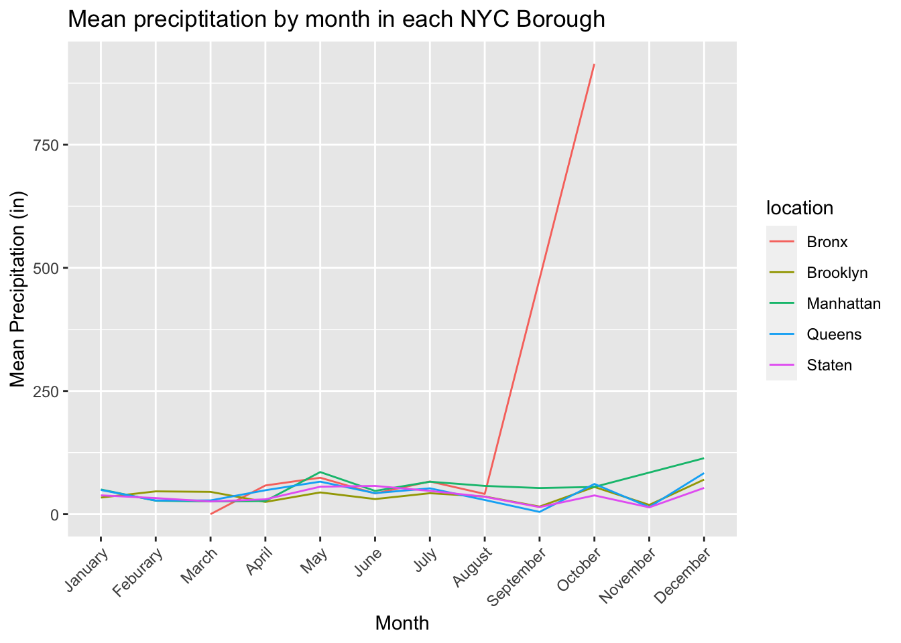
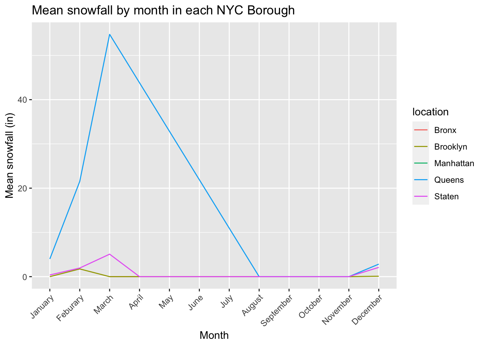

We sought to gather meteorological data from the National Centers for Environmental Information (NCEI), which is part of the National Oceanic and Atmospheric Administration (NOAA).
The data was found on the NOAA website, and we selected to downlaod the entirety of data for the year of 2019 as our starting database. The specific file
We then used the terminal command gunzip to open the .gz
file. Given the size of the file was >1GB we processed it locally
with the goal to filter based on sites that were within NYC.
We found sites by reviewing the list of all of them sites.
The NYC sites were saved in a vector NY_Stations to then
filter the database output.
The initial file had no column headers, so we had to create headers
and saved in col_names_weather.
NY_Stations <- c("US1NYBX0025","US1NYKN0003", "US1NYKN0025", "US1NYNY0074", "US1NYQN0026", "US1NYQN0027", "USC00300958", "USC00300961",
"US1NYQN0029", "US1NYQN0036", "US1NYQN0037", "US1NYRC0001", "US1NYRC0002", "US1NYRC0016",
"USC00305796","USC00305798", "USC00305799", "USC00305804", "USC00305806", "USC00305816",
"US1NYRC0001", "US1NYRC0002", "US1NYRC0016")
col_names_weather <- c("siteID", "date", "element","data_value", "measurement_flag", "quality_flag", "source_flag", "obs_time")
weather.df <- read_csv(file = "/Users/JML/Desktop/2019.csv",
col_names = col_names_weather
) %>%
filter(siteID %in% NY_Stations)
weather.df <- weather.df %>%
mutate(location = case_when(
siteID == "US1NYBX0025" | siteID == "USC00300961" ~ "Bronx",
siteID == "US1NYKN0003" | siteID == "US1NYKN0025" | siteID == "USC00300958" | siteID == "USC00305796" | siteID == "USC00305798" ~ "Brooklyn",
siteID == "US1NYNY0074" | siteID == "USC00305806" | siteID == "USC00305816" ~ "Manhattan",
siteID == "US1NYQN0026" | siteID == "US1NYQN0027" | siteID == "US1NYQN0029" | siteID == "US1NYQN0036" | siteID == "US1NYQN0037" | siteID == "USC00305799" | siteID == "USC00305804" ~ "Queens",
siteID == "US1NYRC0001" | siteID == "US1NYRC0002" | siteID == "US1NYRC0016" ~ "Staten"
))
write_csv(weather.df, "weather_data.csv")weather.df <- read_csv("weather_NYC_2019/weather_data.csv") %>%
mutate(date = lubridate::as_date(as.character(date), format = "%Y%m%d"),
month = month(date),
month_name = fct_recode(as.factor(month),
"January" = "1",
"Feburary" = "2",
"March" = "3",
"April" = "4",
"May" = "5",
"June" = "6",
"July" = "7",
"August" = "8",
"September" = "9",
"October" = "10",
"November" = "11",
"December" = "12"
)) ## Rows: 3178 Columns: 9
## ── Column specification ────────────────────────────────────────────────────────
## Delimiter: ","
## chr (6): siteID, element, quality_flag, source_flag, obs_time, location
## dbl (2): date, data_value
## lgl (1): measurement_flag
##
## ℹ Use `spec()` to retrieve the full column specification for this data.
## ℹ Specify the column types or set `show_col_types = FALSE` to quiet this message.weather.df %>%
filter(element == "PRCP") %>%
group_by(month_name, location) %>%
summarize(mean_prcp = mean(data_value)) %>%
ggplot(aes(x = month_name, y = mean_prcp, group = location)) +
geom_line(aes(color = location)) +
labs(
title = "Mean preciptitation by month in each NYC Borough",
x = "Month",
y = "Mean Precipitation (in)"
) +
theme(axis.text.x = element_text(angle = 45, hjust = 1))## `summarise()` has grouped output by 'month_name'. You can override using the
## `.groups` argument.
weather.df %>%
filter(element == "SNOW") %>%
group_by(month_name, location) %>%
summarize(mean_prcp = mean(data_value)) %>%
ggplot(aes(x = month_name, y = mean_prcp, group = location)) +
geom_line(aes(color = location)) +
labs(
title = "Mean snowfall by month in each NYC Borough",
x = "Month",
y = "Mean snowfall (in)"
) +
theme(axis.text.x = element_text(angle = 45, hjust = 1))## `summarise()` has grouped output by 'month_name'. You can override using the
## `.groups` argument.